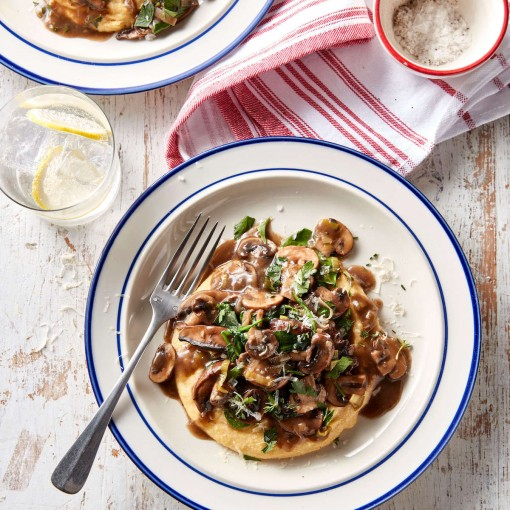

Mushroom Ragout

This aromatic mushroom ragout made from fresh mushrooms is an absolute must for all enthusiastic mushroom friends. Personally, I love mushrooms very much - no matter what kind - and when I was surprised with a good kilogram of mushrooms by dear Michaela von GutBehütet, the joy was understandably great!
Preperation
-
1000 g mushrooms
-
180 g carrots
-
100 g parsnips
-
40 g celery
-
120 g leek
-
60 g butter lard
-
2 tablespoons tomato paste
-
200 g white wine, dry
-
700 g tomatoes, boiled
-
200 g vegetable soup
-
3 tsp Kampot pepper
Alternatively: black pepper
-
2 tsp chili flakes
Recommendation: Pul beaver or korean. red pepper
-
3 tsp marjoram
-
2 tsp salt
-
60 g mushroom garum
-
2 tsp miso paste, dark
-
40 g brown sugar
-
20 g balsamic vinegar
-
3 bay leaves
Mashroom Ragout: Step by Step
-
First cut the mushrooms into 2 to 3 cm cubes.
Then peel carrots, parsnips, celery and leeks if necessary, clean them and smile with a vegetable slicer or grater.
-
Now heat the butter lard in a large pot at medium to rather high temperature.
Then roast the mushrooms in it until golden brown 2 or 3 times.
Caution:
Take your time and do it conscientiously. Constant stirring is essential here!
Then remove from the pot and set aside.
-
Steam the remaining vegetables in the pot for 4-5 minutes. If necessary, just add a little more butter lard.
-
Then add the roasted mushrooms and tomato paste.
Stir well and roast everything for 2 to 3 minutes. Increase temperature by 1 level.
Then deglaze with white wine, stir and then add all other ingredients.
-
Stir everything and simmer gently covered for 15-25 minutes.
At the end, season with salt.
-
Serves great with spaetzle, pasta or simply fresh pastries. What goes well with classic goulash also tastes excellent with this dish!